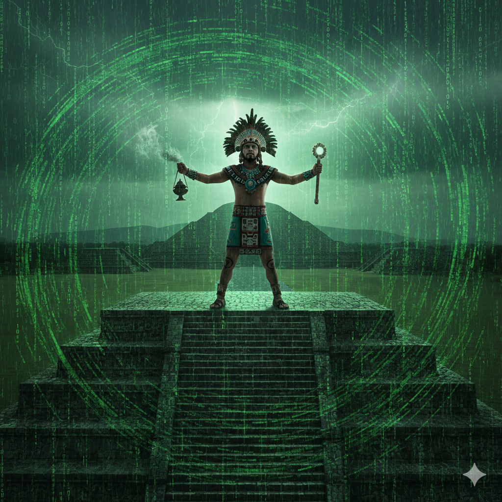

El punto de encaje



El Concepto de Movimiento del Punto de Encaje
Para los "videntes" de la tradición de Don Juan, el movimiento de este punto representa un cambio radical en la conciencia y la realidad percibida:
Fijación y Percepción: Normalmente, el punto de encaje está rígidamente fijo en una posición específica (la posición del ser humano común). Mientras esté ahí, todos percibimos el mismo mundo sólido y cotidiano.
El Movimiento como Desplazamiento: Cuando el punto de encaje se desplaza de su posición habitual, entran en juego diferentes haces de filamentos de energía. Esto permite que el individuo perciba "otros mundos" que son tan reales y totales como el nuestro, pero con leyes físicas y formas distintas.
Alineación: El movimiento no solo cambia lo que vemos, sino que produce una nueva alineación de las emanaciones internas con las externas. Dependiendo de hacia dónde se mueva (hacia arriba, abajo, o hacia las profundidades del huevo luminoso), la percepción puede variar desde alucinaciones y estados de ensueño hasta la transformación física en otras criaturas.
Tipos de Movimiento
Castaneda distingue entre dos formas de cambio en el punto de encaje:
Desplazamiento: Un movimiento hacia las profundidades de la esfera luminosa. Es lo que ocurre durante el "Ensueño" (el control de los sueños) y permite percibir mundos paralelos.
Movimiento: Un cambio de posición sobre la superficie de la esfera. Es más drástico y está relacionado con el "Acecho" (el control del comportamiento), pudiendo llevar a la transformación total de la percepción humana.
Importancia en el Camino del Guerrero
Para Castaneda, el objetivo de un "guerrero" o "brujo" es romper la rigidez de su punto de encaje para obtener flexibilidad perceptiva. El movimiento voluntario del punto de encaje es lo que permite alcanzar la "libertad total", dejando de ser prisioneros de una sola interpretación de la realidad.
"El hombre es un huevo luminoso y el punto de encaje es el lugar donde se percibe el mundo. Si el punto se mueve, el mundo cambia".